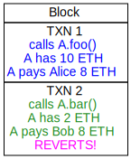
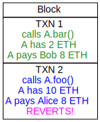
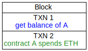

# CS 4501 ### Cryptocurrency <p class='titlep'> </p> <div class="titlesmall"><p> <a href="http://www.cs.virginia.edu/~asb">Aaron Bloomfield</a> (aaron@virginia.edu)<br> <a href="http://github.com/aaronbloomfield/ccc">@github</a> | <a href="index.html">↑</a> | <a href="?print-pdf"><img class="print" width="20" src="../slides/images/print-icon.png" style="top:0px;vertical-align:middle"></a> </p></div> <p class='titlep'> </p> ## Scalability
# Contents [Scalability](#/scaling) [On-Chain Scaling](#/onchain) [Sharding](#/sharding) [Off-Chain Scaling](#/offchain) [Bitcoin's Lightning Network](#/btcln) [Case Studies](#/casestudies) [Concurrency](#/concurrency)
# Scaling
## BTC transactions per second [](https://www.blockchain.com/charts/transactions-per-second) <!-- to generate this graph: set to 7 day average, 3 year history, the right-click and "open image in new tab"; save and convert to .webp with -q 75 --> ## ETH & BTC fees, all time [](https://bitinfocharts.com/comparison/transactionfees-btc-eth.html#alltime) <!-- to generate this graph: click on the image in the slide, screenshot it (and the next one), and edit in gimp; convert to .webp with -q 75 --> ## ETH & BTC fees, last year [](https://bitinfocharts.com/comparison/transactionfees-btc-eth.html#1y) ## Transactions per second (TPS) - Bitcoin: about 3-7 TPS - 3 TPS is about 260k TXNs per day - Theoretical maximum of 10-12 TPS - Ethereum, pre PoS: about 10 TPS - 10 TPS is about 864k TXNs per day - Ethereum, post PoS: about 13 TPS - 13 TPS is about 1.1M TXNs per day - Estimated upper limit of 100,000 TPS - VISA: about 6,000 TPS in 2020 ([source](https://www.statista.com/statistics/261327/number-of-per-card-credit-card-transactions-worldwide-by-brand-as-of-2011/)) - 6k TPS is about 518M per day - Even higher during the holiday shopping season ## Fundamental problem - How do we allow a cryptocurrency system to grow... - As more people use it and more transactions occur - While also: - Preserving security - Not having the blockchain size become prohibitively large - Keeping fees to a reasonable level - Keeping transaction times to a reasonable size ## Blockchain layers The "parts" of a modern cryptocurrency can be thought of as different "layers", each built upon the one below: - Layer 0, the "Network" layer: the base system and network (P2P network, Internet, etc.) - Layer 1, the "Fundamental" or "Implementation" layer: consensus, cryptography, the computing machine (EVM, e.g.) - Layer 2, the "Execution" layer: smart contracts, dApps - Layer 3, the "Application" layer: user-facing tools and web interfaces ## A note on layers - Different sources define a different number of layers - From 2 to 6 - Some separate out the computing aspect of layer 1 into a "Layer 1.5" - Optimizations - Layer 0 optimizations are outside the scope of this course - Most focus is on layers 1 and 2 - Layer 3 is less of a cryptocurrency issue, so we won't focus on that ## Classic Blockchain Trilemma - There are three important aspects to consider: - Scalability - Decentralization - Security - Any change to one of them will affect the others - Often negatively - So how to improve one without affecting the others? - That's the Blockchain Trilemma ## Layer 1 Scaling - Options include: - Increase block creation speed - Increase block size - Change the consensus protocol - Sharding - Called "on-chain" scaling solutions - Require a change to some aspect of the cryptocurrency itself - Some solutions create "child" chains - They are still part of the overall blockchain ## Layer 2 Scaling - Options include payment channels, nested channels, and side chains - Examples - Lightning Network is a Bitcoin's layer-2 scaling solution - Polkadot is a layer-2 scaling solution for Ethereum - Called "off-chain" scaling solutions - It does *not* require a change to the cryptocurrency itself - Some solutions create "side chains" - They are on a separate blockchain different from the main cryptocurrency blockchain
# On-Chain Scaling (layer 1) <img src="../slides/images/logos/btc-coin-symbol.svg" class="cclogosubtitle"> <img src="../slides/images/logos/eth-coin-symbol.svg" class="cclogosubtitle">
## On-Chain Scaling (Layer 1) - Modifications to the cryptocurrency protocol itself - Topics: - Increasing block size, increasing block creation speed, changing the consensus algorithm - Bitcoin's SegWit (segregated witness) - Bitcoin's Lightning Network - Sharding: splitting a blockchain into multiple, smaller blockchains ## Increase block size? - Doing so will cause increased delays - The additional TXs have to get around the P2P network - Nodes have to spend more time accumulating transactions into the (now larger) blocks - More computational power to compute the hash / nonce for a block - Longer time to verify blocks - Consensus security takes longer with increased block size - Current cryptocurrencies strike a balance between these factors <!-- .slide: class="cclogo-slide" --> ## Current blockchain stats - [](https://coinmarketcap.com/currencies/bitcoin/) Bitcoin averages (as of 4/23/20): - $<$10 minute block time - $\approx$3 Mb block size when busy, but [about 1.7 Mb lately](https://www.blockchain.com/charts/avg-block-size) - [1.8k - 2.5k TXNs / block](https://www.blockchain.com/charts/n-transactions-per-block) (60 sec/min * 10 min * 3 TPS) - [About 300k TXNs per day](https://www.blockchain.com/charts/n-transactions) ($\approx$3.5 TPS) - [](https://coinmarketcap.com/currencies/ethereum/) Ethereum (post PoS) (as of 4/23/20): - [12 seconds block time](https://etherscan.io/chart/blocktime) - About 113 Kb block size - That's [800 Mb per day](https://messari.io/charts/ethereum/blk-size-byte) added to the blockchain per day! - [1.1M TXNs per day](https://etherscan.io/chart/tx/) ($\approx$12.7 TPS) - Which is about 165 TXNs per block - About 13 transactions per second ## Current blockchain stats - [Bitcoin's blockchain size](https://ycharts.com/indicators/bitcoin_blockchain_size) is $\approx$475 GB (as of 4/20/23) - And increasing at about 150 Mb per day - Ethereum's full blockchain is about 1.7 Tb - And increasing at about 400 Mb per day! - This won't be sustainable with increased adoption ## Increase block creation speed? - A big difference between Ethereum and Bitcoin - Too fast a block creation speed adds too many coins to circulation - This will devalue the currency - This requires fundamental changes to how the cryptocurrency works - Consensus times, mining algorithms, P2P communication, etc. - This means it likely creates a *new* cryptocurrency ## Changing the consensus algorithm - A necessary step to increase block creation speed or block size - But it is not a solution in and of itself - Meaning we have to pair it with increased block size or decreased block time - And requires changing much of how the cryptocurrency is structured ## Bitcoin's Segregated Witness - This puts some data into a separate section, called a *witness* - This is raw stack data - If redeeming multiple UTXOs, then this data can be shared between all the UTXOs - Thus decreasing the average TXN size and increasing TXN count per block - (It also fixed the issue of the TXN hash changing during mining) <!-- .slide: class="cclogo-slide" --> ## Start a new Cryptocurrency - You can also start a new, faster, cryptocurrency - Consider [](https://coinmarketcap.com/currencies/stellar/) Stellar Lumens ([XLM](https://coinmarketcap.com/currencies/stellar/)) <br clear='all'> - We discussed this during [Mining](mining.html#/) - 6 second blocks, no mining, "trusted" nodes - High throughput, fast transactions
# Sharding ### Layer 1: On-channel <img src="../slides/images/logos/eth-coin-symbol.svg" class="cclogosubtitle">
## Sharding > shard [noun]: a fragment, especially of broken earthenware. *Sharding* is splitting a database into pieces, or *shards* ## Database Sharding | ID | Name | DoB | Address | ... | |----|--------|----|------------|----| | alice | Alice | 1/2/89 | 1234 Any St | ... | | bob | Bob | 3/4/98 | 5678 Main St | ... | | ... | ... | ... | ... | ... | - A very large database could keep the *columns* in different databases - And link them by a unique ID - Especially if different operations need mutually exclusive columns - This is called *vertical scaling* - As the columns, which are vertical, are split among different databases ## Database Sharding | ID | Name | DoB | Address | ... | |----|--------|----|------------|----| | alice | Alice | 1/2/89 | 1234 Any St | ... | | bob | Bob | 3/4/98 | 5678 Main St | ... | | ... | ... | ... | ... | ... | - A very large database could also keep the *rows* in different databases - Especially if any operation needed mutually exclusive rows - Each row has a "home" database - This is called *horizontal scaling* or *sharding* - As the rows, which are horizontal, are split among different databases ## Cryptocurrency sharding - Typically only on a proof-of-stake blockchain - Proof-of-work blockchains: how to verify TXN on a different shard? - Sharding is splitting a blockchain into multiple, smaller blockchains (shards) to reduce congestion and increase TPS - Often called "child" chains - Miners / validators work on one (or more) shards - Transactions on a shard have a root Merkle hash, which appears on the main chain - Some allow child chains to have different consensus algorithms, block details, etc. <!-- .slide: class="right-float-img" -->  ## Cryptocurrency sharding - Miners / validators create blocks on a given shard - The hash of a shard's block makes it's way to the main chain - The main chain's blocks are just hashes of the blocks on the shards <!-- .slide: class="cclogo-slide" --> ## [](https://coinmarketcap.com/currencies/ethereum/) Ethereum 2.0 (aka Eth2) - The long-awaited switch to PoS from PoW - Finally happened in September 2022 - TPS is expected to increase from 10-15 TPS to "tens of thousands" - Idea: split up the workload into many blockchains in parallel (shards) - Have them share a common consensus proof-of-stake blockchain - Changing any one shard would require a modification to the consensus blockchain - And likely a loss of your staked ETH <!-- .slide: class="cclogo-slide" --> ## [](https://coinmarketcap.com/currencies/ethereum/) Ethereum 2.0 (aka Eth2) Roll-out is in three phases: 1. "Phase 0" or "Beacon Chain", launched December 1, 2020 - Creation of the *Beacon Chain*, the proof-of-stake consensus blockchain of ETH2.0 2. "Phase 1" or "[The Merge](https://ethereum.org/en/upgrades/merge/)", occurred on Sep 15, 2022 - This merged the Beacon Chain with the current Ethereum network, and caused a switch from PoW to PoS - This has been delayed many, many, many times 3. "Phase 2" or "Shard chains", expected in 2023 - State execution will be on the shard chains - The ETH 1.0 chain will become one of the shards - Currently expecting 64 shards
# Off-Chain Scaling (layer 2)
## Off-Chain Scaling (Layer 2) - Off-chain scaling uses work done outside of the blockchain to improve efficiency of the system - This includes grouping transactions together (rollups) and using side channels - Side channels == side chains == parallel chains <!-- .slide: class="right-float-img" --> ## Rollups <img src="https://upload.wikimedia.org/wikipedia/commons/thumb/7/78/Betty_Crocker_Fruit_Roll-Ups.jpg/640px-Betty_Crocker_Fruit_Roll-Ups.jpg" style="padding:0"> - General idea: 1. Execute a number of transactions off-chain 2. Collect the data from those transactions 3. Compress / batch that data 4. Rolling the data up into the main chain in one batch - But how to know if the transactions are valid? - Two possibilities: optimistic rollups and zk-rollups ## Optimistic Rollups - Assumes the data is valid, but checks it - If it is, then no further action needed - If not... - Identify the problem transactions and undo them - Perform a fraud proof to do so - Penalize the guilty party - This means a *bond* is provided by those submitting TXNs - Also by those performing the fraud proofs to prevent malicious proofs - Revert those transactions back to before the invalidity - This whole process can take a few weeks! ## zk-Rollups - Transactions provide zero-knowledge proof showing validity - These zero knowledge proofs are "bundled" into a single transaction - Anybody can then verify it ## Proof types - Fraud proofs - Optimistic rollups assume that the transactions are valid - But if challenged, the system runs a *fraud proof* to see if fraud takes place - Validity proofs - When the rollup results are supplied to the main chain, a proof of validity is provided as well - Which is then checked - zk-rollups use these, as do other scaling solutions ## Rollups - Optimistic rollups are relatively easy to implement - But disputes can take weeks to resolve - zkRollups are very hard to implement and computationally intensive - But much easier to resolve disputes - Both can scale up transactions significantly
# Bitcoin's Lightning Network ### Layer 2: off-channel <img src="../slides/images/logos/btc-coin-symbol.svg" class="cclogosubtitle"> <img src="../slides/images/logos/eth-coin-symbol.svg" class="cclogosubtitle"> <img src="../slides/images/logos/wbtc-coin-symbol.svg" class="cclogosubtitle">
<!-- .slide: class="right-float-img cclogo-slide" --> ## Increase number of TXNs <img src="https://upload.wikimedia.org/wikipedia/commons/thumb/1/13/Lightning_over_Oradea_Romania_3.jpg/497px-Lightning_over_Oradea_Romania_3.jpg" style="padding:0"> - What if we increase the number of transactions without an increase in the data? - And without making a fundamental change to the cryptocurrency itself - To do so, we would need to keep *some* data off the blockchain, but not *all* of it - This is the idea of [](https://coinmarketcap.com/currencies/bitcoin/) Bitcoin's *Lightning Network* <!-- .slide: class="right-float-img" --> ## Bitcoin's Lightning Network  <!-- https://www.bitcoin.com/get-started/what-is-lightning-network/ --> - Proposed in a [white paper](https://lightning.network/lightning-network-paper.pdf) from 2016 - Imagine if Alice and Bob were going to make a number of transactions with each other - They make 8 TXNs total - Net result: Alice gains 1 BTC - This is the motivation for Bitcoin's Lightning Network (LN) - Targeted toward micro-transactions, but works with transactions of any size - [Main reference](https://www.bitcoin.com/get-started/what-is-lightning-network/) <!-- .slide: class="right-float-img" --> ## Bitcoin's Lightning Network  - If Alice and Bob don't need to spend the money during that time... - They can set up a *payment channel* - Money is committed on the Bitcoin blockchain (solid lines) - The eight *intermediate* transactions occur *off* the blockchain (dashed lines) - The final settlement occurs on the blockchain (solid lines) ## Bitcoin's Lightning Network - The money is *committed* on the blockchain to open a payment channel - It cannot be spent outside the LN until that channel is closed - Any transactions in the channel are much faster - And don't store data on the blockchain - The channel can be closed at any time - The final settlement is posted to the blockchain ## LN Routing - Imagine if: - Alice and Bob have a payment channel - Bob and Charlie have a payment channel - If Alice wants to pay Charlie... - Then she could *route* it through Bob - Assuming the channel is sufficiently large enough - And still keep it off the chain - Bob may collect some (small) fees for this <!-- .slide: class="right-float-img" --> ## LN Routing  - If the LN is large enough, then many transactions can be kept off chain - Here, Alice wants to pay Parker - And routes it through four other intermediary nodes - (Graph based on the one [here](https://commons.wikimedia.org/wiki/File:17_node_mesh_network.svg)) ## LN Benefits - Once off the Bitcoin blockchain, LN is not constrained by those parameters - Can use different consensus, block size, fee structure, etc. - Much faster transactions - Don't have to wait to be included in a 10 minute block - Lower fees than the Bitcoin blockchain - Ideal for micro-transactions - Lowers the data load on the Bitcoin blockchain - Increasing throughput for all ## LN Drawbacks - LN-enabled wallets are not all that friendly - You have to encourage people to run LN nodes - Fees paid to those people help - Vulnerable to many attacks - See next slide - You have to un-lock your funds to spend them elsewhere ## LN Attacks 1 ([source](https://www.bitcoin.com/get-started/what-is-lightning-network/)) - Griefing attacks: Funds aren't lost, but it causes the victim's Lightning funds to be frozen so that the payment channel cannot process any transactions - Flood and loot: An attacker forces many victims to claim their funds from the blockchain at the same time (flood) - The attacker uses this congestion to steal funds that were unable to be claimed before the deadline (loot) ## LN Attacks 2 ([source](https://www.bitcoin.com/get-started/what-is-lightning-network/)) - Time-dilation attacks: An attacker lengthens the time a victim becomes aware of new blocks by delaying block delivery - Pinning attacks: An attacker tricks a victim into closing their LN channel improperly and steals individual transactions <!-- .slide: class="cclogo-slide" --> ## LN Competitors - [](https://coinmarketcap.com/currencies/wrapped-bitcoin/) You can get WBTC: Wrapped Bitcoin - A Ethereum smart contract exchanges BTC for WBTC on a 1:1 basis - WBTC is thus an ERC-20 token cryptocurrency - Once on Ethereum, transactions are *faster*, if not *cheaper* than through Bitcoin - But not as fast as on the Lightning Network - As of 4/20/23: - [LN stats](https://1ml.com/statistics): had 5,390 BTC locked up - [](https://coinmarketcap.com/currencies/wrapped-bitcoin/) WBTC had 154k BTC locked up ## ETH Simple Payment Channel - From [here](https://github.com/eolszewski/simple-payment-channel) and [here](https://github.com/eolszewski/simple-payment-channel/blob/master/contracts/SimplePaymentChannel.sol) <pre class="code-wrapper"><code class="hljs awk small" style="height:auto;width:120%" >pragma solidity ^0.4.24; import "zeppelin-solidity/contracts/math/SafeMath.sol"; import "zeppelin-solidity/contracts/ECRecovery.sol"; /** * @title SimplePaymentChannel * @author Eric Olszewski (eolszewski@gmail.com) * * @dev Ethereum payment channels allow for off-chain transactions with an on-chain * settlement. In this implementation, a party (sender) can open a channel with a * deposit, expiration, and recipient. The sender can then sign transactions off-chain * and send them to the recipient, who can submit one of these signed transactions to * chain to close and settle the channel. */ contract SimplePaymentChannel { using SafeMath for uint256; using ECRecovery for bytes32; event ChannelOpened(address sender, address recipient, uint expiration, uint256 deposit); event ChannelClosed(uint256 senderBalance, uint256 recipientBalance); address public sender; address public recipient; uint256 public expiration; constructor(address _recipient, uint256 _duration) public payable { require(msg.value > 0); require(msg.sender != _recipient); sender = msg.sender; recipient = _recipient; expiration = now + _duration; emit ChannelOpened(sender, recipient, expiration, msg.value); } function closeChannel(uint256 _balance, bytes _signedMessage) public { require(msg.sender == recipient); require(isValidSignature(_balance, _signedMessage)); uint256 balance = _balance; uint256 remainder = 0; if (_balance > address(this).balance) { balance = address(this).balance; } else { remainder = address(this).balance.sub(balance); } recipient.transfer(balance); emit ChannelClosed(remainder, balance); selfdestruct(sender); } function extendExpiration(uint256 _expiration) public { require(msg.sender == sender); require(_expiration > expiration); expiration = _expiration; } function claimTimeout() public { require(now >= expiration); selfdestruct(sender); } function isValidSignature(uint256 _balance, bytes _signedMessage) internal view returns (bool) { bytes32 message = prefixed(keccak256(abi.encodePacked(address(this), _balance))); return message.recover(_signedMessage) == sender; } function prefixed(bytes32 _hash) internal pure returns (bytes32) { return keccak256(abi.encodePacked("\x19Ethereum Signed Message:\n32", _hash)); } } </code></pre> <!-- .slide: class="cclogo-slide" --> ## [](https://coinmarketcap.com/currencies/ethereum/) Ethereum's State Channels - Same idea as Bitcoin's Lightning Network - Instead, we use a smart contract to "lock" the funds - Transactions happen off-chain - In case of a dispute, arbitration mechanism is to revert back to initial state - Example: Matic Network was one - It's now Polygon, and is something else we'll cover shortly... ## Plasma Chains - A separate blockchain "anchored" to the Ethereum blockchain - Technically a "side chain" - Uses fraud proofs - Sometimes called "child" blockchains - There are many implementations: - [OMG network](https://omg.network/) - Polygon, which we'll see shortly - [Gluon](https://gluon.network/) - LeapDAO (now apparently defunct)
# Case Studies <img src="images/logos/matic-coin-symbol.svg" class="cclogosubtitle"> <img src="images/logos/dot-coin-symbol.svg" class="cclogosubtitle"> <img src="images/logos/sol-coin-symbol.svg" class="cclogosubtitle">
<!-- .slide: class="cclogo-slide" --> ## [](https://coinmarketcap.com/currencies/stellar/) [Stellar Lumens](https://www.stellar.org/) - Coin: [](https://coinmarketcap.com/currencies/stellar/) Stellar Lumens (XLM) - Design goal was a cryptocurrency that enabled very fast payments - 3-5 second blocks - Once committed, no possibility of being "undone" via a 51% attack (or similar) - While it can handle dApps, it's really used for transactions - If you need to move money between accounts, this is one of the fastest ways to do it - Currently handling over 80 transactions per second (7 million per day) ([source](https://www.crypto-news-flash.com/report-stellar-tops-cryptotransactions-by-volume/)) - Could easily handle 1,000 per second (86 million per day) <!-- .slide: class="cclogo-slide" --> ## [](https://coinmarketcap.com/currencies/stellar/) Stellar Lumens details - Consensus via the [Stellar Consensus Protocol](https://www.stellar.org/papers/stellar-consensus-protocol) - Byzantine fault tolerant - A small node subset is selected of "trusted nodes" to be the validator for a block - Only 21 "top-tier" validator nodes, run by trusted institutions - Mining / validation most similar to proof-of-stake - See the current blockchain stats at https://www.stellar.org/ <!-- .slide: class="cclogo-slide" --> ## [](https://coinmarketcap.com/currencies/solana/) [Solana](https://solana.com/) - Launched in 2017 via [this whitepaper](https://solana.com/solana-whitepaper.pdf) - Programmable (like Ethereum) and meant to be very fast - See the transaction counter [here](https://solana.com/) - Uses proof-of-history - Nodes only have to agree on the order of items in the blockchain - [](https://coinmarketcap.com/currencies/solana/) Native coin is SOL - The devs seem to "pause" the blockchain every few months; not very decentralized! - Controversial: [some consider it a scam](https://www.reddit.com/r/CryptoCurrency/comments/vh0ors/a_software_developers_take_why_solana_is_the/); and [wallets get drained](https://twitter.com/SolanaStatus/status/1554921396408647680) <!-- .slide: class="cclogo-slide" --> ## [](https://coinmarketcap.com/currencies/solana/) Solana - Mean to be a competitor with Ethereum - Can handle 50,000 TPS - In Sept 2021, a surge of transactions (400,000 TPS) brought down the cryptocurrency - It was restored the next day - Programming languages: C, C++, and Rust - Uses the [eBPF (extended Berkeley Packet Filter)](https://en.wikipedia.org/wiki/Berkeley_Packet_Filter) execution environment - A virtual machine that allows for easy analysis of network data <!-- .slide: class="cclogo-slide" --> ## [](https://coinmarketcap.com/currencies/solana/) Solana C Contract ([ref](https://github.com/solana-labs/example-helloworld)) <pre class="code-wrapper"><code class="hljs awk small" style="height:auto;width:120%" >/** * @brief C-based Helloworld BPF program */ #include <solana_sdk.h> uint64_t helloworld(SolParameters *params) { if (params->ka_num < 1) { sol_log("Greeted account not included in the instruction"); return ERROR_NOT_ENOUGH_ACCOUNT_KEYS; } // Get the account to say hello to SolAccountInfo *greeted_account = & params->ka[0]; // The account must be owned by the program in order to modify its data if (!SolPubkey_same(greeted_account->owner, params->program_id)) { sol_log("Greeted account does not have the correct program id"); return ERROR_INCORRECT_PROGRAM_ID; } // The data must be large enough to hold an uint32_t value if (greeted_account->data_len < sizeof(uint32_t)) { sol_log("Greeted account data length too small to hold uint32_t value"); return ERROR_INVALID_ACCOUNT_DATA; } // Increment and store the number of times the account has been greeted uint32_t *num_greets = (uint32_t *)greeted_account->data; *num_greets += 1; sol_log("Hello!"); return SUCCESS; } extern uint64_t entrypoint(const uint8_t *input) { sol_log("Helloworld C program entrypoint"); SolAccountInfo accounts[1]; SolParameters params = (SolParameters){.ka = accounts}; if (!sol_deserialize(input, & params, SOL_ARRAY_SIZE(accounts))) { return ERROR_INVALID_ARGUMENT; } return helloworld(& params); } // </code></pre> <!-- .slide: class="cclogo-slide" --> ## [](https://coinmarketcap.com/currencies/polygon/) [Polygon](https://polygon.technology/) - Re-branded from Matic, it's an expansion of what Matic can do - [](https://coinmarketcap.com/currencies/polygon/) Coin is MATIC - It uses existing Ethereum smart contracts to move ETH off-chain to a Polygon "sidechain" - Essentially the smart contract accumulates a balance, and the Polygon chain reads that balance - One can create sidechains in Polygon - Existing ones have their own communities that use them, mine them, etc. - They are proof-of-stake <!-- .slide: class="cclogo-slide" --> ## [](https://coinmarketcap.com/currencies/polygon/) Polygon - It's not bound to the Ethereum legacy technology from 2015 - You can create chains for given projects / apps / systems - And pick-and-choose what features you want - And yet it's still interoperable with Ethereum - This is much more feature-rich and capable than Ethereum - But still largely associated with that model - Many of the DEXes [run on Polygon](https://defillama.com/) <!-- .slide: class="cclogo-slide" --> ## [](https://coinmarketcap.com/currencies/polkadot-new/) Polkadot - Similar to Polygon, it allows scaling and side chains - Described in [their whitepaper](https://polkadot.network/PolkaDotPaper.pdf) - Meant to be able to interact with multiple existing chains, as well chains you create for a given project - [](https://coinmarketcap.com/currencies/polkadot-new/) Governance token and coin is [DOT](https://www.coinbase.com/price/polkadot) - Polkadot "interacts" with existing blockchains - Which means you can exchange messages between *different* blockchains through Polkadot - Interaction is through "bridges" <!-- .slide: class="right-float-img cclogo-slide" --> ## [](https://coinmarketcap.com/currencies/polkadot-new/) Polkadot structure  - Main chain is the "relay chain" - One can run one or more parallel chains called "parachains" (shards) - Collators: collect parachain TXNs and passes to validator - Think: mining a parachain - Validators: a PoS "miner" for the relay chain - Fishermen: monitor network for "bad behavior"
# Concurrency <img src="../slides/images/logos/eth-coin-symbol.svg" class="cclogosubtitle">
<!-- .slide: class="right-float-img" --> ## TXN order matters  - Imagine a contract *A* that only has 10 ETH - In the same block, both Alice and Bob try to get their payouts - Who gets paid? - In this case, Alice does, and Bob does not ## TXN order matters   - What if the transaction order was different? - The two shown blocks are *not* the same - Who gets paid depends on whose transaction is *earlier* in the block's lists of TXNs - Is this a race condition? - Yes, for the miner / validator - No, for the node ## Blockchain determinism - An axiom of a blockchain: > The current state of the blockchain must depend solely on the data (including transaction order) in the blockchain itself - This means: - No random numbers - No difference in opinion about the state by different nodes - No floating point numbers! ## Evaluating transactions  - Transactions are evaluated strictly in the order they are found in the blockchain - That's deterministic - Miners / validators replay *each* transaction - But they get a (potential) reward for doing so - Nodes also have to replay *each* transaction - But they get no reward! <!-- .slide: class="cclogo-slide" --> ## Blockchain state - The blockchain state is: - All the values of *all* the variables in *all* the contracts - All the balances - The transaction nonces - Etc. - This state is maintained by the [](https://coinmarketcap.com/currencies/ethereum/) Ethereum Virtual Machine (EVM) - So is sometimes called the *EVM state* - Any one call could depend on any previous call - So how to determine current state? - Run everything sequentially! - But that is slooooooow <!-- .slide: class="right-float-img" --> ## Optimizing BC evaluation  - Not all TXNs depend on all others - Solution: We could build a graph of dependencies - But with the complexity of the EVM state, that would likely take longer than just executing them sequentially - Solution: we could add concurrency (threads, locks, etc.) - But then it's not deterministic (when programmed poorly) ## The problem - Sync'ing the full Ethereum blockchain can take *two weeks* - And that's optimized - We need to improve upon sequential execution - While staying fully deterministic - And we'd like to take advantage of multi-core CPUs ## Solution: Speculation - Solution: execute the transactions in parallel - Detect when there is a conflict and then fix it - To make life easier... - ... without much loss in speed... - ... we can parallel execute the transactions in one block at a time - And once that block is all done, move on to the next one - *Every* data value on the blockchain will have a *read lock* and also a *write lock* - This is all in the Ethereum Virtual Machine (EVM), which is what is replaying all the transactions <!-- .slide: class="right-float-img" --> ## EVM Memory Locks  - TXN 1 acquires only a read lock - TXN 2 acquires only a write lock - TXN 3 acquires both a read lock & a write lock - TXN 4 acquires only a read lock - That's allowed! - TXN 5 wants a write lock, but that violates TXN 1's read lock - Formally it fails to acquires a write lock on `x[1]` - How locks work: - There can be any number of read locks on a value - But a single write lock will conflict with any other locks, either read or write <!-- .slide: class="right-float-img" --> ## EVM Memory Locks  - TXNs 1 & 5 violated each other's locks - So we cancel those transactions' modifications to the EVM state - And schedule them in the order they are in the block - And then re-run them sequentially in that order ## Evaluating Transactions - There are three different entities who evaluate transactions: - Miners / validators as they are mining transactions into blocks - Nodes as they are trying to achieve consensus on a just-mined block - Nodes that are playing catch-up of the blockchain ## Evaluating Transactions - Miners / validators now include concurrency information in the blocks - The first $p$ transactions can be run concurrently, the last $n-p$ must be run sequentially - Motivation: if they don't, their block, in the case of a fork, is less attractive to others - Nodes much check that the TXNs marked as being able to be run concurrently really can be - This is part of the block validation tests - Nodes playing catch-up don't have to check it ## How much speed-up? - Saraph & Herlihy (from Brown) studied this in 2019 - [An Empirical Study of Speculative Concurrency in Ethereum Smart Contracts](https://drops.dagstuhl.de/opus/volltexte/2020/11968/pdf/OASIcs-Tokenomics-2019-4.pdf) - Their results: - 8-fold increase in 2016 - Declining to a 2-fold increase in late 2017 - The speed-up decreased as the number of transactions and number of conflicts increased - A "small" number of "popular" contracts were responsible for most of the conflicts ## Increasing speed-up - Saraph & Herlihy had a number of potential ways to allow for further speed-ups: - Split a contract's memory into read memory and write memory - Educate contract programmers how to program to avoid conflicts - Allow the EVM to have atomic data types that avoid all this - Recognize *commutative* operations and allow them to execute in parallel (assuming they are atomic) - Example: ``` balance['alice'] += 4; balance['alice'] += 3; balance['alice'] += 7; ``` - The order these are executed does not affect the final result